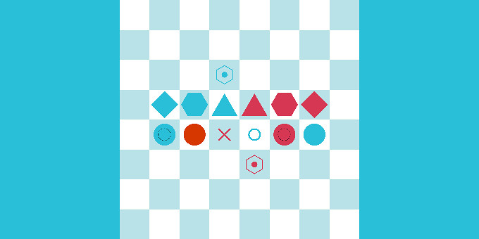
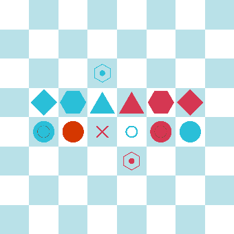
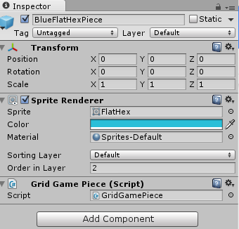
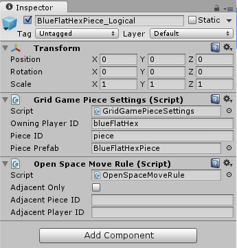
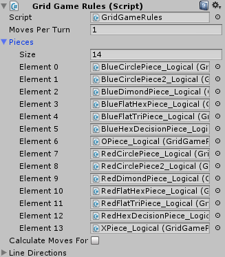
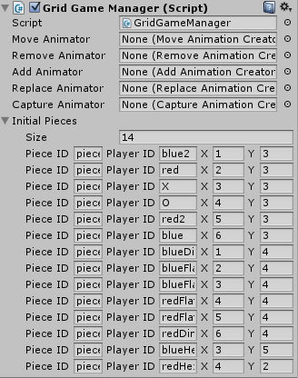

Creating Your Own Pieces

This tutorial will show you how to create your own pieces. We will use the following board,

with these rules:
- One turn per player.
- All blue ones move first, then red.
- You can move anywhere.
- You can’t capture enemy pieces.
- You can’t win or lose.
1. Create a New Piece
Create a new empty GameObject. Add a SpriteRenderer, and set the sprite to whatever image you want. Add a GridGamePiece component. Finally, make this GameObject a prefab.

2. Set Up the Piece Logic
Create another empty GameObject, and give it the same name as the piece created in the previous step with _Logic or _Setting added so that you know they are related. Add a Grid Game Piece Setting component, and fill in the settings. For these examples, all pieces have an ID of “piece” (they will have the same rules), and there is one player for each color and shape. Set the piece prefab to the prefab you made in the previous step.
Add an Open Space Move Rule component so that players can move pieces to any open position on the board.

Make this GameObject a prefab too.
You can also add more piece rules. The default ones can be found by clicking on Add Component and then Gamelogic | Strategy | Piece Rules. You can also create your own piece rules.
3. Add the Piece to the GameBoard Game Object
To add the piece to the GameBoard game object, you need to configure two components on the GameBoard. On the Grid Game Rules component, add all the logical piece prefabs to the Pieces field in any order you want.

On the GridGameManager, add the pieces as you want to position them on the grid in the initial configuration.

Remember that the Piece ID and the Player ID are set on the Logical prefab of the piece.